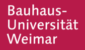
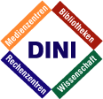

Consultant for E-Learning, OpenSource, Android
|  | Since Juin 2013, I am consulting the Bauhaus University in Weimar with the evaluation of the existing learning management system and the requirements analysis for its renewal. |
| On August 29th 2013 , I have been invited to take part in a panel discussion on the future of education in the context of the 6th Alumni Workshop of the Center for Global Discussion. Together with my co-panelists Prof. Małgorzata Zachara and Kristina Klinkforth, moderator Prof. Klaus Segbers, and the active participation of the CGP alumni, we had a vivid discussion on the changing role of universities in the context of the evolution of digital tools for learning. | |
|  | In the context of the two-day seminar Zukunftswerkstatt „Massive Open Online Courses – neuer Weg oder Seifenblase?“, located at the Fern-Universität Hagen, I have moderated the workshop on technial aspects (Introductory slides). |
| eMadrid, is a research network dealing with the development of E-learning technolgies. I have been invited to take part in the seminar Cursos masivos MOOC: primeros resultados and talked about my experince as coordinator of openHPI and my ideas about openness in different MOOC formats (Slides and Video) |